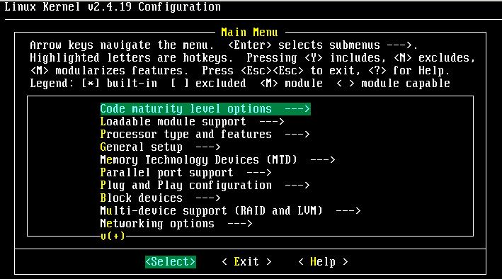

| |
最近更新日期：2003/02/11
|
请注意，本文主要针对核心 2.4.xx 版本进行说明～
|
什么是核心(
Kernel )
我干嘛要更新核心
核心的版本与何处下载最新核心
开始设定核心的内容
开始编译啰！
安装核心与 Lilo
多重引导设定
核心模块管理：模块编译,
depmod,
lsmod,
modinfo,
modprobe,
insmod,
rmmod,
什么是核心(
Kernel )
-
Linux Distribution：
如果您已经从前面一路走来都没有休息的话，那么问您一个问题好了，那就是『什么是
Linux distribution ？』呵呵！应该还没有忘记吧？ Linux distribution
就是各个开发 Linux 这个操作系统的公司所丢出来的安装光盘啦！举个截至目前为止（2002/10）市场占有率蛮高的几个套件，例如：
Red
Hat, Mandrake,
OpenLinux(Caldera)
等等，这些都是开发 Linux 操作系统的公司！好了，那么怎么这么多家公司呀！那他们都是
Linux 吗？没错！他们都是相同的使用 Linux 的『核心』来进行套件的开发的！也就是说，他们『本质』上都是一样的！比较不同的地方可能是他们使用的套件不同或者是新加入的某些工具不同而已！基本上，他们都是
Linux ！所以啰，认真的学习某一个 distribution 也就够了！其他的 distribution
绝大部分都是相同的耶！
-
Kernel：
那么到底什么是核心呢？还记得我们在前面的 BASH
shell 部分提到过：计算机真正在工作的东西其实是『硬件』，不是
Windows 、不是 Linux 也不是 Unix！其实就是 CPU
啦、内存啦、硬盘啦、声卡啦、网络卡啦、、等等的硬件配备，那么如何控制这些硬件呢？那就是核心的工作了！也就是说，核心是一个『操作系统』最底层的
咚咚啦！你所希望计算机帮你达成的各项工作，都需要透过『核心』的帮助才行！当然啰，如果你想要达成的工作是核心所没有办法提供的，那么你自然就没有办法透过核心来控制计算机使他工作啰！又如果你想要有网络功能（例如
NAT 服务），但是你的核心偏偏忘记加进去这项功能，那么不论你如何『卖力』的设定该网络套件，很抱歉！不来电??换句话说，你想要让计算机进行的工作，都必须要『核心有支持』才可以！！这个标准不论在
Windows 或 Linux 这几个操作系统上都相同！如果有一个人开发出来一个『全新的硬件』，目前的核心不论
Windows 获 Linux 都不支援，呵呵！那么不论你用什么系统，哈哈！这个硬件都是英雄无用武之地啦！那么是否了解了『核心』的重要了呢？没错！所以我们需要来了解一下如何编译我们的核心啦！
关于驱动程序与核心的问题：很多朋友常常感到困惑的，就是
Linux 上面针对最新硬件的驱动程序总是慢了几个脚步，所以觉得好像 Linux 的支持度不足！其实不可以这么说的，为什么呢？因为在
Windows
上面，对于最新硬件的驱动程序需求，基本上，也都是厂商提供的驱动程序才能让该硬件工作的，因此，在这个『驱动程序开发』的工作上面来说，应该是属于硬件
发展厂商的问题，因为他要我们买他的硬件，自然就要提供消费者能够使用的驱动程序啦！所以，如果大家想要让某个硬件能够在
Linux 上面跑的话，那么似乎可以发起一人一信的方式，强烈要求硬件开发商发展
Linux 上面的驱动程序！这样一来，也可以促进 Linux 的发展呢！
-
Linux 核心放在哪里？
好问题！那么 Linux 核心放在哪里呢？嘿嘿！还记得我们之前在安装
Red Hat 7.2 里头就提过了吧！而且在开机的流程里头也有说明过，那个开机的顺序是：
-
BIOS
-
MBR（就是 Lilo 或 Grub ）取得 boot loader；
-
取得核心 kernel 的资料并加载
-
init
-
很多 scripts
-
login 与 shell
看到了吧！那个第三步骤就需要 kernel 啰！那个 kernel 其实就是 lilo.conf
里头说的 image 指到的那个档案，也就是 vmlinuz 这个档案啦！放置在 /boot
里头！我们需要的编译出来的核心档案就是这一个东西！除此之外，由于近来的核心通常是支持模块的，那个外挂模块则是放置在
/lib/modules/`uname
-r` 里面啰！
我干嘛要更新核心
这个『核心』是除了 BIOS 之外，一个操作系统中最早被启动的东西，他包含了所有可以让硬件与软件工作的信息，所以，如果没有搞定核心的话，那么你的系统肯定会有点小问题！好了，那么是不是将『所有目前核心有支持的东西都给他编译进去我的核心中，那就可以支持目前所有的硬件与可执行的工作啦！』，
这话说的是没错啦，但是你是否曾经看过一个为了怕自己今天出门会口渴、会饿、会冷、会热、会被车撞、会摔跤、会被性骚扰，而在自己的大包包里面放了大瓶矿
泉水、便当、厚外套、短裤、防撞钢梁、止滑垫、电击棒....等一大堆东西，结果却累死在半路上的案例吗？当然有！但是很少啦！我相信不太有人会这样做！
（会这么做的人通常都已经在医院了～）取而代之的是会看一下天气，冷了就只带外套，热了就只带短衣、如果穿的漂亮一点又预计晚点回家就多带个电击棒、出远
门到没有便利商店的地方才多带矿泉水....说这个干什么！对啦！就是要您了解到，核心的编译重点在于『你要你的
Linux 作什么？』，是啦！如果没有必要的工作，就干脆不要加在你的核心当中了！这样才能让你的
Linux 跑得更稳、更顺畅！这也是为什么我们要编译核心的最主要原因了！
说到这里突然想到以前国军研究的『经国号战斗机』事件，在当时，经国号里头的配备都是『最棒的！』包括测量仪器、瞄准配备、武器系统等等，但是呢，却配上一部普普通通的客机用引擎！挖哩ㄌㄟ?最早期试飞的时候，经国号竟然只能『在跑道上滑行！』真是悲哀！同样的道理，
Linux 的核心也是这样的，如果你的硬件与核心之间没有办法达到良好的配合，那么
Linux 确实可能会跑得不很顺畅！！
Linux 的核心有几个主要的特色，除了『Kernel 可以随时、随各人喜好而更动』之外，Kernel
的『版本更动次数太频繁』也是一个特点！所以啰，除非你有特殊需求，否则一次编译成功就可以啦！不需要随时保持最新的核心版本，而且也没有必要（编译一次核心要粉久的ㄋㄟ！）。话说到这里又突然想到今天看到的一篇文章，大意是说老板想要雇用的人会希望是
Linux 的老手，因为他们比较容易了解问题的所在，除此之外，如果有任何问题发生，由于其使用
Linux 是可以随时修补漏洞的！但是如果是 Windows 的话，就得要将机器关闭，直到
MS 推出修补套件后才能再启用～
那么是否『我就一定需要在安装好了 Linux 之后就赶紧给他编译核心呢？』，老实说，『并不需要的』！这是因为几乎在每一个
distribution 当中，他们已经预设好了相当大量的模块了，所以几乎用户常常或者可能会使用到的数据都已经被编译成为模块（这个『模块』的意义后面会再解释），也因此，呵呵！我们使用者确实不太需要重新来编译核心！尤其是『一般的用户，由于系统已经将核心编译的相当的适合一般使用者使用了，因此一般入门的使用者，基本上，不太需要编译核心』。OK！那么鸟哥闲闲没事干跑来写个什么东西？既然都不需要编译核心还写编译核心的分享文章，鸟哥卖弄才学呀！？很抱歉，
VBird 虽然是个『不学有术』的混混，却也不会平白无故的写东西要您来指教～当然是有需要才会来编译核心啦！编译核心的时机可以归纳为几大类：
-
新功能的需求：我需要新的功能，而这个功能只有在新的核心里面才有，那么为了获得这个功能，只好来重新编译我的核心了（例如
iptables 这个防火墙机制只有在 2.4.xx 版本里面才有，而新出产的 AGP 显示适配器，很多也需要新的核心推出之后，才能正常而且有效率的工作！）再举个例子，在之前的
Red Hat 7.2 的版本中，由于预设是将 CD-ROM 编译成核心的『模块』，也就是说，核心本身还没有支持
CD-ROM 的功能，必须要挂上模块之后才能使用与读取这个 CD-ROM ！是否觉得很麻烦呢？呵呵！那么这个时候，如果你想要直接让
kernel 支持 CD ROM 的话，就得要重新编译核心啰；
-
原本核心太过臃肿：如果您是那种对于系统『稳定性』很要求的人，那么对于核心多编译了很多莫名其妙的功能而不太喜欢的时候，那么就可以重新编译核心来取消掉该功能啰；
-
与硬件的搭配稳定性：由于原本 Linux
的核心大多是针对 Intel 的 CPU 来作开发的，所以如果你的 CPU 是 AMD 的系统时，有可能（注意！只是有可能，不见得一定会如此）会让系统跑得『不太稳！』就
VBird 的经验来看，使用旧的 Pentum 系列的旧机器安装 Linux 的结果，还没有胡乱当机的经验！但是安装在
K6-2, K6-3 上面的 Linux ，通常需要重新编译一下核心会比较稳定一些！
-
其他：就是你需要特殊的环境需求时，就得自行设计你的核心啰！（像是一些商业的软件包系统，由于需要较为干净的操作系统，那么他们的核心就需要更简洁有力了！）
另外，需要注意重新编译核心虽然可以针对你的硬件作优化的步骤（例如刚刚提到的
CPU 的问题！），不过由于这些优化的步骤对于整体效能的影响可能还不到百分之五，因此如果是为了增加效能来编译核心的话，基本上，效益不大！然而，如果是针对『系统稳定性』来考虑的话，那么就有绝对充分的理由来支持您重新编译核心啰！
『如果系统已经运行很久了，而且也没有什么大问题，加上我又不增加冷门的硬设备，那么建议就不需要重新编译核心了！』，因为重新编译核心的最主要目的是『想让系统变的更稳！』既然您的
Linux 主机已经达到这个目的了，何必再编译核心？不过，就如同前面提到的，由于预设的核心不见得适合您的需要，加上预设的核心可能并无法与您的硬件配备相配合，所以
VBird 通常都是『一安装完 Linux ，第一个动作（在还没有进行任何的设定之前，也没有上网，也没有更新套件等等，反正就是安装完毕
Linux ，第一次进入 Shell 时！）立刻就是以最新版本的 kernel 重新编译一个属于我这部主机的核心！』以让我的核心都能够相当的符合我的硬件配备，让系统运作的更顺畅！
然而由于『核心的主要工作是在控制硬件！』所以编译核心之前，请先了解一下您的硬件配备，与您这部主机的未来功能！由于核心是『越简单越好！』所以只要将这部主机的未来功能给他编进去就好了！其他的就不用去理他啦！
核心的版本与何处下载最新核心
请特别留意！不同版本的核心之间，最好不要互相升级！否则及容易发生问题！例如：
Red Hat 6.x 使用的是 2.2.xx 版本的核心，那么就不要使用 2.4.xx 的核心来编译他！如果误用的话，很有可能造成您系统上面的服务无法正常的工作！还请特别留意呢！
-
核心的版本：
要更新核心自然就得知道目前我的核心是哪一个啰！然后才能拿更新的核心来更新呀！您说是吧！那么在哪里找到这个核心的信息呢？应该还记得那个
uname
查看的信息吧！没错！就是他了，可以使用其功能来查询目前在工作的核心版本：
[test @test
test]# uname -r
2.4.7-10
<==这个是 Red Hat 7.2 的预设核心版本！ |
看到了吧！那个东西就是核心版本的信息啦！好了！我们依照
RPM
版本的先例，也来谈一谈 kernel 的版本吧！基本上， kernel 的版本可以分为：
在这当中，需要特别留意的属于第二个那个[次版本]啰！
-
如果次版本是奇数的话，例如
2.3,
2.5 等等，那表示他是一个『测试性质功能的核心版本』，这种核心通常是在推出稳定版本的核心之前，用来给
developer (核心维护更新测试者！）测试用的！虽然功能较为强大，但是由于是属于测试性质，所以可能会有些许的
bug 也说不定；
-
如果次版本是偶数的话，例如
2.2,
2.4 等等，那表示他是一个经过测试之后才释出的稳定核心版本，这种核心较为稳定不容易出错，比较适合一般个人或者是商业使用！
所以啦！我们要升级的时候，大多就是使用那种偶数的核心版本啦！不过这里还是要再提一遍！就是『2.2
与 2.4 是两个具有相当大差异的核心版本，两者之间使用到的函式库基本上已经不相同了，所以在升级之前，如果您的核心原本是
2.2.xx 版(Red Hat 6.x 系列)，那么就升级到 2.2.xx 版本的最新版，不要由 2.2.xx
直接升级到 2.4.xx 版，否则到时可能会欲哭无泪～～』，这个问题在讨论区一再地被提起！这里再次说明！
此外， 2.2.xx 与 2.4.xx 的比较中，并不是
2.4.xx 就一定比 2.2.xx 还要新，因为这两种版本同时在进行维护与升级的工作！如果有兴趣的话，可以前往
Linux 核心网站 http://www.kernel.org
一看究竟，您就可以了解目前的核心变动情况了！另外，再提到额外的一点，就是
2.2 可以升级到 2.3 版本，这是因为这两个是互相援用的，在 2.3 测试成功之后，就将他转成
2.2 的版本，所以两者的函式库使用的情况是约略相同的，这个情况也可以使用在
2.4.xx 与 2.5.xx 版本之中！也就是说，您的 Red Hat 7.x 的 2.4.xx 版本可以升级到
2.5.xx 版本去呦！但是您的 Red Hat 6.x 的 kernel 2.2.xx 则仅能更新到最新的
2.2.xx 或者是 2.3.xx ，强烈的建议不需要更新到 2.4.xx ～～再次不厌其烦的提醒大家～
好了！既然 Red Hat 7.1 ~ 7.3 使用的是 kernel
2.4.xx 版本，我们又需要的是稳定型态的 2.4.xx 版本，再由 http://www.kernel.org
网站资料上发现，截至目前为止( 2002/05/23 )，最新的核心是 2.4.18
这一个，所以，您可以前往下载这一个版本的核心，当然也可以由本站下载呢！嗯！底下的各个选项的择定，我们都是以这一个版本为例呦！需要特别的注意！由于较新的核心版本可能会多出一些选项，因此若有不同的项目也没有关系！稍微查看一下说明内容就可以了解啦！
-
核心下载地点：
Linux 的核心目前是由其发明者 Linus 所属团队在负责维护的，而其网站在底下的站址上，在该网站上可以找到最新的
kernel 信息！不过，美中不足的是目前的核心越来越大了（ linux-2.4.18.tar.gz
这一版，这一个档案大约 30MB 了！），所以如果你的 ISP 连外很慢的话，那么使用台湾的映射站台来下载不失为一个好方法：
基本上，就如同前面所说的，最好是在系统安装完毕之后马上就进行核心编译工作，免得以后每次装一些特定功能的时候又要花一大轮时间编译。另外要说明的，由于小弟是以
2.4.18 这一版的核心来做升级的动作，所以以下是以 2.4.18 来做示范！
开始设定核心的内容
由于 VBird 都是在安装完 Linux 之后立刻就给他编译核心的，所以通常我都是直接将该核心档案刻录起来，或者是先捉到自己的计算机中，再以
ftp 等等的动作将该文件传输到 Linux 系统下！好了！目前我就假设您已经可以上网了，所以您可以使用底下的方式来下载核心，并将之解开在
/usr/src 当中！此外，由于编译核心的行为必须要是 root 才可以进行，所以底下的动作使用者身份为
root 呦！
1. 下载核心：
[root @test
/root]# wget http://aerosol.ev.ncku.edu.tw/~vbird/download/linux-2.4.18.tar.gz
<==由本站下载核心
--02:55:31--
http://aerosol.ev.ncku.edu.tw/%7Evbird/download/linux-2.4.18.tar.gz
=> `linux-2.4.18.tar.gz'
Connecting
to aerosol.ev.ncku.edu.tw:80... connected!
HTTP request
sent, awaiting response... 200 OK
Length: 30,108,170
[application/x-gzip]
0K .......... .......... .......... .......... .......... 0% @
49.65 KB/s
50K .......... .......... .......... .......... .......... 0% @
26.25 KB/s
100K
.......... .......... .......... .......... .......... 0% @
39.90 KB/s
最后在您的 /root
底下会产生一个名为 linux-2.4.18.tar.gz 的档案！那就适合新的 source 了！
2. 解压缩：
[root @test
/root]# cd /usr/src <==kernel
的默认 source 档案放置目录
[root @test
/src]# mv linux linux.old <==将旧的核心编译的目录搬移成其他目录
[root @test
/src]# tar -zxvf /root/linux-2.4.18.tar.gz <==将核心档案解压缩吧！
[root @test
/src]# mv linux linux-2.4.18
[root @test
/src]# ln -s linux-2.4.18 linux <==建立连结！ |
需要比较留意的是，核心所放置的地点『一定是 /usr/src/linux』这一个目录，然而由于不论哪一版核心编译都是这一个目录底下编译的，所以我个人相当的建议将每一版的核心都使用不同的目录来指定，然后以
link
的方式将该目录 link 到 linux 就可以啦！较为简单而且明了！底下的动作请都在
/usr/src/linux 底下进行呦！
另外，在开始设定核心内容之前，先来说明一下什么是『模块』？
以方便大家了解核心编译的选择！由于核心的更新速度虽然很快，然而有些硬件的出版却是不定时的，另外，有些软件需要的加载程序可能也需要核心的支持才有办
法提供！然而如果每次一有新的硬件或者软件推出，则需要编译一次核心，那不是挺麻烦的吗？要晓得的是，编译一次核心小一点的也要
30
分钟左右（这与你的机器速度有关！），每次这么编译不是挺麻烦的吗？所以啰，就有所谓的『模块』出现了！由于目前的核心已经都具有『外挂模块』的功能（这
个等一下我们在实际编译的时候会提到！），所以，只要将您『可能会用到』的功能的选项，将他编译成模块！那么往后真的需要该功能的时候，再将他加载到核心
就可以啦！这么做最大的优点就是，当没有使用到该功能的时候，核心并不会主动的加载，所以真正在核心内工作的程序就不会太多而耗掉系统资源！另外，当您目
前不需要的功能可以先编译成模块，未来真的有需要的时候，就可以将他直接加载！嘿嘿！可以免除再一次编译的繁复手续呢！！很棒吧！所以啰！如果可以编译成
为模块的，那么就直接先编成模块也是可以的哩！但是，如果是『肯定不会』使用到的功能，那么就不需要编译进来了！例如我的旧计算机当中根本就没有
AGP 插槽，那么我自然就不需要在我的核心里面编译上 AGP 的支持啰！
-
特别留意：
很奇怪呦！我老是写『特别留意』的字样?真是伤脑筋，鸟哥大概算老人了吧，粉容易碎碎念的….好啦，要强调的还是得强调，是这样的，在上面的介绍里，我们不是说过
Kernel 的外挂模块是放在 /lib/modules/`uname
–r` 吗？好了，那么现在来想一想，如果你的『同一版本的核心编译两次』的情况下，会怎样？这是很可能的情况呢！怎么说？万一你的第一次的编译没有成功的话，那总得编译第二次吧？而由于第一次编译完成之后，你的一些模块已经放在
/lib/modules/2.4.18 当中了( 以这一次我们使用的核心版本为例 )，那么下次在编译完成后，核心的模块还是会放在
/lib/modules/2.4.18 这个目录下，那不是重复了吗？有些模块会被重复放置，导致问题重重的～因此上，如果同一个版本的核心被编译两次以上的话，那么请将
/lib/modules 里面的该版核心先移动掉吧！举个例子来说，假如你的核心版本是
2.4.18 ，而又要对 2.4.18 重新编译一次，那么就必需要：
cd /lib/modules
mv 2.4.19 2.4.19.old
这样才行呢！不然安装之后还是会有问题的呦！请特别留意呢！
-
设定编译模式：
目前的 Kernel 可以允许多种编译的模式，包括了：
-
make config
：这种模式需要逐行输入所需要设定的项目，无法往前修改设定，所以目前很少使用这种方式来设定
Kernel 的项目了；
-
make xconfig
：这种模式则是使用 X-Window 为主要环境的设定模式！除非你有 X-Window 在执行，否则没有办法使用这种模式；
-
make menuconfig
：这种模式有点像是文字界面的选单模式，较为简便，而且可以在纯文本界面下面执行编辑动作！是目前最常使用的模式。
由于我们是在文字接口下工作，因此，我们就使用 make
menuconfig 来进行核心的编译设定内容吧！这个选单模式较为简单的啦！
| [root @test
linux]# make menuconfig |
出现如下图示：

看到上面的图示之后，你会发现有两个画面，一个是大框框内的反白光柱，另一个则是底下的
Select, Exit, 与 Help 光标，这几个组件的用法如下：
-
最底下的 <Select> <Exit>
<Help> ：可以使用『左右键』来移动光标；
-
上下键可以移动上面大框框部分的
Code maturity level options 那一行！，有箭头『 ---> 』则表示该行内部还有其他细项需要来设定的意思。
-
当以『上下键』选择好想要设定的项目之后，并以『左右键』选择
<Select>
之后，按下『
Enter
』就可以进入该项目去作更进一步的细部设定啰！
-
在细部项目的设定当中，如果前面有
[
] 或 < > 符号时，该项目才可以选择，而选择可以使用『空格键』来选择；
-
若为 [*] <*> 则表示编译进核心；若为
<M> 则表示编译成模块！尽量在不知道该项目为何时，且有模块可以选，那么就可以直接选择为模块啰！
-
当在细项目选择 <Exit>
后，并按下 Enter ，那么就可以离开该细部项目啰！
基本上建议只要『上下左右 空白 及 Enter 』这六个按键就好了！不要使用
Esc ，否则一不小心就有可能按错的！
-
开始设定：
底下的设定项目非常的多，其中，如果您使用的是比 2.4.18 还要新的版本时，那么有可能会出现更多的选项！如果不确定选项的内容是什么？请千万以
Help 进入看一下该项目的设定值，如果还是不清楚怎么办？那么就直接以 Kernel
的默认值保留即可！我在底下的设定中，仅列出个人认为比较重要的项目，其他的项目您就得自己看一下啰?其实，基本上，只要底下这些项目您都了解之后，那么核心编译大抵上就没有很严重的困扰啰！
[root @test
linux]# make mrproper
<==去除 .o 的编译过的档案
[root @test
linux]# make menuconfig <==以文字选单的模式进行编译！
底下开始编译！
Code maturity
level options --->
<==关于核心测试功能的 code 开启项目；
[ ] Prompt for development and/or incomplete code/drivers <==因为我们没有要研发核心，所以不选
Loadable module
support ---> <==这个就是我们之前说的『模块』啦！
[*] Enable loadable
module support
<==让核心可以加载模块项目（必选）
[ ] Set version information on all module symbols
<==这个除非你要使用旧版本的数据，通常不选！
[*]
Kernel module loader <==也是必选啦！
Processor type
and features ---> <==选择
CPU 的型号项目
(Pentium-MMX) Processor family <==请依照您的实际情况选择您的
CPU 型号
< > Toshiba Laptop support <==底下这两个有使用到（笔记本电脑）才选择！
< > Dell laptop support
<M> /dev/cpu/microcode - Intel IA32 CPU microcode support <==如果是使用
Intel 的，可以编译成模块
<M> /dev/cpu/*/msr - Model-specific register support <==如果是使用
Intel 的，可以编译成模块
<M> /dev/cpu/*/cpuid - CPU information support <==如果是使用
Intel 的，可以编译成模块
(off) High Memory Support <==这个东西跟你的
RAM 有关系，RAM小于 1 GB 则使用 off 即可
[ ] Math emulation <==是否需要数值模拟？当然不需要！我们的
CPU 都够强了！
[ ] MTRR (Memory Type Range Register) support <==P6
(PII等级以上) 并且要跑 X-Window 才加上吧,与 AGP 有关
[ ] Symmetric
multi-processing support <==如果是双
CPU 的主板才选择！否则就不要选了！
[*] Local APIC support on uniprocessors (NEW) <==如果你的
CPU 有支持 APIC 则选择！通常可以选择起来啦！
[*] IO-APIC support on uniprocessors <==跟上面的理由一致！选择起来吧！
General setup
---> <==一般设定部分
[*] Networking
support <==底下四个一定要选，跟基本的硬件装置有关！
[*] PCI support
(Any) PCI access mode
[*] PCI device
name database
[ ] EISA support <==底下这两个则与主板上面的插槽有关！除非笔记型，否则不选
[ ] MCA support
[*] Support for hot-pluggable devices <==有点类似即插即用吧！可以选择呦！
PCMCIA/CardBus support --->
< > PCMCIA/CardBus support <==因为我没有笔记型，所以不选，若为笔记本电脑，请选择！
PCI Hotplug Support --->
[*] System V IPC <==底下这三个东西对于效能都不错！可以选择呦！
[*] BSD Process Accounting
[*] Sysctl support
(ELF) Kernel core (/proc/kcore) format <==底下这几个东西可以编译成模块啦！但是我直接编到核心啰！
<*> Kernel support for a.out binaries
<*> Kernel support for ELF binaries
<*> Kernel support for MISC binari
[*] Power Management support
< > Advanced Power Management BIOS support <==如果你想要你的
BIOS 接管电源管理，可以选择！我是不选的啦！
Memory Technology
Devices (MTD) --->
< > Memory Technology Device (MTD) support <==没必要就不要选吧！
Parallel port
support --->
< > Parallel
port support <==由于我的主机上面并没有接打印机，所以没选！如果你有打印机的话，一定要选择
Plug and Play
configuration --->
<*> Plug and Play support <==底下两个
即插即用！ 马上勾选！
<*> ISA Plug and Play support
Block devices
---> <==一些比较冷门的储存机器！如果不确定的话，直接编译成模块吧！没关系的！
<*> Normal PC floppy disk support
< > XT hard disk support
< > Compaq SMART2 support
< > Compaq Smart Array 5xxx support
< > Mylex DAC960/DAC1100 PCI RAID Controller support
< > Loopback device support
< > Network block device support
< > RAM disk support
Multi-device
support (RAID and LVM) --->
[ ] Multiple devices driver support (RAID and LVM) <==除非要完
RAID （磁盘阵列）与 LVM ，否则不用选！
Networking
options ---> <==这一部份是最重要的除非特别强调，否则能编成模块就编成模块！
<*> Packet
socket
[*] Packet socket: mmapped IO
<M> Netlink device emulation (NEW)
[*] Network packet filtering (replaces ipchains)
[ ] Network packet filtering debugging (NEW)
[*] Socket Filtering
<*> Unix domain sockets
[*] TCP/IP networking
[*] IP: multicasting
[*] IP: advanced router
[*] IP: policy routing (NEW)
[*] IP: use netfilter MARK value as
routing key (NEW)
[*] IP: fast network address translation
(NEW)
[*] IP: equal cost multipath (NEW)
[*] IP: use TOS value as routing key (NEW)
[*] IP: verbose route monitoring (NEW)
[ ] IP: large routing tables (NEW)
[*] IP: kernel level autoconfiguration
[*] IP: DHCP support (NEW)
[*] IP: BOOTP support (NEW)
[*] IP: RARP support (NEW)
<M> IP: tunneling
<M> IP: GRE tunnels over IP
[*] IP: broadcast GRE over IP (NEW)
[*] IP: multicast routing
[*] IP: PIM-SM version 1 support (NEW)
[*] IP: PIM-SM version 2 support (NEW)
[*] IP: TCP Explicit Congestion Notification support
[*] IP: TCP syncookie support (disabled per default)
IP: Netfilter Configuration ---> <==这就是防火墙机制里头的
iptables 啦！都编成模块！
<M> Connection tracking (required for masq/NAT) (NEW)
<M> FTP protocol support (NEW)
<M> IRC protocol support (NEW)
<M> IP tables support (required for filtering/masq/NAT) (NEW)
<M> limit match support (NEW)
<M> MAC address match support (NEW)
<M> netfilter MARK match support (NEW)
<M> Multiple port match support (NEW)
<M> TOS match support (NEW)
<M> AH/ESP match support (NEW)
<M> LENGTH match support (NEW)
<M> TTL match support (NEW)
<M> tcpmss match support (NEW)
<M> Connection state match support (NEW)
<M> Packet filtering (NEW)
<M> REJECT target support (NEW)
<M> Full NAT (NEW)
<M> MASQUERADE target support (NEW)
<M> REDIRECT target support (NEW)
<M> Packet mangling (NEW)
<M> TOS target support (NEW)
<M> MARK target support (NEW)
<M> LOG target support (NEW)
<M> TCPMSS target support (NEW)
<M> ipchains (2.2-style) support (NEW)
<M> ipfwadm (2.0-style) support (NEW)
<M> The IPX protocol
[ ] IPX: Full internal IPX network (NEW)
< > Appletalk protocol support
< > DECnet Support
< > 802.1d Ethernet Bridging
QoS and/or fair queueing --->
[ ] QoS and/or fair queueing
Telephony Support
--->
<==这东西我也不知道怎么玩～～
< > Linux telephony support
ATA/IDE/MFM/RLL
support ---> <==储存界面的选择！当然
IDE 一定要选的啦！！ 里面如果有看到属于您的芯片组，请记得将他选择起来！例如如果使用
VIA 的芯片组，那么最后一项VIA82CXXX chipset support就一定要选择起来呢！如果你是跟
VBird 一样，使用较老旧的主板，那么就用系统默认值也就可以了！
<*> ATA/IDE/MFM/RLL support
IDE, ATA and ATAPI Block devices --->
<*> Enhanced IDE/MFM/RLL disk/cdrom/tape/floppy support
<*> Include IDE/ATA-2 DISK support
[*] Use multi-mode by default
<*> Include IDE/ATAPI CDROM support
---- IDE chipset support/bugfixes
[*] CMD640 chipset bugfix/support
[*] RZ1000 chipset bugfix/support
[*] Generic PCI IDE chipset support
[*] Sharing PCI IDE interrupts support
[*] Generic PCI bus-master DMA support
[*] Use PCI DMA by default when available
[*] Intel PIIXn chipsets supportt
[*] PIIXn Tuning supportt
SCSI support
---> <==我的旧机器上并没有安装
SCSI 卡！我确定我不会使用到 SCSI ，但是如果你可能会安装的话，请编译！
< > SCSI support
Fusion MPT
device support --->
I2O device
support --->
< > I2O support
Network device
support ---> <==仔细的将你的网络设备编译进来吧！这个也很重要的！
[*] Network device support
<*> Dummy net driver support <==这个一定要装！但是请注意！如果你之前已经使用了
MRTG 了！这个装完之后 MRTG 要重跑一次！
<M> Bonding driver support
<M> EQL (serial line load balancing) support
<M> Universal TUN/TAP device driver support
<M> General Instruments Surfboard 1000
Ethernet (10 or 100Mbit) ---> <==这里面有相当多的卡，我只列出我要的卡而已！请选择你自己的网络卡呦！
[*] Ethernet (10 or 100Mbit)
[*] EISA, VLB, PCI and on board controllers
<*> EtherExpressPro/100 support
<M> RealTek RTL-8139 PCI Fast Ethernet Adapter
support
[*] Use PIO instead of MMIO
[*] Support for older RTL-8129/8130
boards
<M> VIA Rhine support <==这就是传说中的
D-Link 530 那块卡的驱动程序啦！
<*> PPP (point-to-point protocol) support <==这个一定要编进核心！不然就无法使用
ADSL 的 rp-pppoe 拨接啰！
[*] PPP filtering (NEW)
<M> PPP support for async serial ports (NEW)
<M> PPP support for sync tty ports (NEW)
<M> PPP Deflate compression (NEW)
<M> PPP BSD-Compress compression (NEW)
<M> PPP over ATM (EXPERIMENTAL) (NEW)
Amateur Radio
support ---> <==底下这四个应该不需要安装吧！？
IrDA (infrared)
support --->
ISDN subsystem
--->
Old CD-ROM
drivers (not SCSI, not IDE) --->
Input core
support ---> <==这个也编成模块就好啰！
<M> Input core support
<M> Keyboard support
<M> Mouse support
(1024) Horizontal screen resolution (NEW)
(768) Vertical screen resolution (NEW)
<M> Joystick support
<M> Event interface support
Character devices
---> <==接口设备的选项！最重要的地方在
AGP 的设定项目！因为我没有 AGP 所以没有设定！
[*] Virtual terminal
[*] Support for console on virtual terminal
<*> Standard/generic (8250/16550 and compatible UARTs) serial support
[*] Unix98 PTY support
<M> Mouse Support (not serial and bus mice)
[*] PS/2 mouse (aka "auxiliary device") support
< > /dev/agpgart (AGP Support) <==这个相当的重要！就是
AGP 显示适配器的支持核心！请选择（若你有 AGP 的话！）
[ ] Intel 440LX/BX/GX and I815/I830M/I840/I850 support
<==下面的选项要上面的打勾之后才会出现！
[
] Intel I810/I815/I830M (on-board)
support
请特别留意选择你的适合的主板芯片组呢！
[ ] VIA chipset support
[ ] AMD Irongate, 761, and 762 support
[ ] Generic SiS support
[ ] ALI chipset support
[ ] Serverworks LE/HE support
[ ] Direct Rendering Manager (XFree86 DRI support)
[ ] Build drivers for old (XFree 4.0) DRM (NEW)
--- DRM 4.1 drivers
< > 3dfx Banshee/Voodoo3+
< > ATI Rage 128
< > ATI Radeon
< > Intel I810
< > Matrox g200/g400
< > SiS (NEW)
[ ] Direct Rendering Manager (XFree86 DRI support)
Multimedia
devices --->
File systems
---> <==底下的选项主要在提供核心支持的文件格式！相当的重要！如果忘记编入的话，系统可是会读不到东西！
[*] Quota support <==没有他！
Quota 就无法起来！请选择呦！
<M> Kernel automounter support
<*> Kernel automounter version 4 support (also supports v3)
<M> Ext3 journalling file system support (EXPERIMENTAL)
<M> DOS FAT fs supportt
<M> MSDOS fs supportt
<M> UMSDOS: Unix-like file system on top of
standard MSDOS fss
<M> VFAT (Windows-95) fs supportt
<M> Compressed ROM file system support
[*] Virtual memory file system support (former shm fs)
<*> ISO 9660 CDROM file system support <==在
Red Hat 7.2 这里就是被编成模块了！才需要每次加载！
[*] Microsoft Joliet CDROM extensionss
<M> Minix fs support
<M> NTFS file system support (read only)
[*] /proc file system support
[*] /dev/pts file system for Unix98 PTYs
<*> Second extended fs support
<M> System V/Xenix/V7/Coherent file system support
Network File Systems --->
<M> Coda file system support (advanced network fs)
<*> NFS file system support <==NFS
也是需要的呦！
<M> SMB file system support (to mount Windows shares etc.)
<==网芳总是需要的吧！
[*] Use a default NLS (NEW)
Default
Remote NLS Option: "cp950" (NEW) <==支持中文的语系！
Partition Types --->
Native Language Support ---> <==除了底下说的几个
* 的之外，其他的全部都编译成为模块！（以备不时之需！）
Default NLS Option: "iso8859-1" (NEW)
<*> Traditional Chinese charset (Big5) (NEW)
<*> NLS ISO 8859-1 (Latin 1; Western European Languages) (NEW)
<M> for others
Console drivers
--->
[*] VGA text console
Sound
--->
< > Sound card support <==你有声卡吗？那就编译他吧！
USB support
--->
<M> Support for USB
Kernel hacking
---> |
好了！编译完成之后选择『Save
Configuration to an Alternate File』然后写成一个你喜欢的档名，这个档案内容就是你刚刚编译完成的数据啦！然后选择
<Exit> 之后，再储存一次到系统当中！接着下来就准备要编译啰！
另外，上面的设定您可以 按这里
来下载，然后捉到您的 /usr/src/linux 目录下，进入 make menuconfig 画面之后，选择『Load
an Alternate Configuration File』，然后写入档名 VBird-2.4.18 ，这样一来，
Linux 核心的默认选项则成为上面的样子啰！然后再请您一个一个的进行修正啦！目前我的机器以上面的档案案例来工作中，一切正常的啦！
不过，上面的资料主要是适用在鸟哥的个人机器上面的，我们这个网站主要的核心也是这样编出来的！因为我重视的地方在于『网络服务器』上面，所以里头的设定少掉了相当多的个人桌上型
Linux 的硬件编译！所以，如果你想要编译出一个适合您的机器的核心，那么可能还有相当多的地方需要来修正的！不论如何，请随时以
Help 那个选项来看一看内容吧！反正 Kernel 重编的机率不大！花多一点时间重新编译一次！然后将该编译完成的参数档案储存下来，未来就可以直接将该档案叫出来读入了！所以花多一点时间安装一次就好！那是相当值得的！
开始编译啰！
-
开始编译之前：
开始编译之前请先确认你的这一次编译的核心与上一次编译的核心的版本不同！请特别留意：
-
因为编译成模块的数据会被系统安装在『 /lib/modules/`uname
-r` 』底下，所以，如果这次你安装的核心版本跟上一次相同时，那么自然模块放置的地点就一样了，那会造成很多模块版本的问题！因此，这个时候就需要将原本的模块移动到其他地方去啰！不过，由于我们是下载新核心，所以这部份就可以略过了！因为版本自然不同啰！
-
另外，我们编译出来的 Kernel 的文件名为 vmlinuz ！这个东西就是我们所需要的核心档案啦！他正确的摆放位置是在
/boot 当中哩！此外，还有系统地图数据 System.map 也是很重要的，同样在 /boot
当中！
-
开始编译：
开始编译的动作主要如下所示：
[root @test
linux]# make dep <==建立相依的属性关系！
[root @test
linux]# make clean <==将旧的资料去除掉！
[root @test
linux]# make bzImage <==开始编译核心！这个核心是经过压缩的，此外，这个步骤也很长！
[root @test
linux]# make modules <==开始编译模块！这个动作视您刚刚编译的模块数量！
[root @test
linux]# make modules_install <==好了！将数据给他安装在
/lib/modules/`uname -r` 里面啰！
[root @test
linux]# make install <==嗯！就将刚刚
bzImage 建立完成的核心给他安装上来！ |
在编译的过程当中，可能会有些错误或者是警告的讯息，因此，为了怕错过什么重要的信息，你也可以使用命令重导向来将数据存在档案里头，例如这样做：
make dep clean bzImage modules
modules_install > compile.kernel.log
基本上，编译的动作就是这样而已！我们说一说各个步骤的主要意义：
-
make dep ：这个动作在进行，将您在上一节所选择的项目当中，属于模块的咚咚进行相依属性的建立，以方便未来软件或程序进行的时候，模块的呼叫；
-
make clean ：这个动作会将您前一次编译的目标文件
( *.o 的档案 ) 给他去除，所以编译的内容才会是新的核心！
-
make bzImage ：注意喔！那个 I 是『 i 』的大写字符?这个步骤主要在产生可开机的核心档案，也就是我们再开机程序当中提到好多次的
vmlinuz 那个档案啦！但是由于目前的核心档案都还蛮大的，因此都会经过压缩的程序?所以，编译出来的核心档案放置的地点在底下的目录当中：
/usr/src/linux/arch/i386/boot/bzImage
此外，其实还有个未经压缩的核心在 /usr/src/linux 底下，那就是 /usr/src/linux/vmlinux
，不过我们不使用这个档案，因此您只要记得上面提到的那个压缩过的核心档案即可！
-
make modules ：这个步骤在编译模块啦！
-
make modules_install ：这个步骤在安装模块！那么模块安装在哪里呢？呵呵！就是我们之前提过的，在
/lib/modules/`uname –r` 里面，因为我们的核心是 2.4.18 ，所以就安装在 /lib/modules/2.4.18
当中啰！
如果在编译的过程当中发生问题的话，通常的可能就是挑选的项目有点问题，这个时候请重新再挑选一次设定内容『
make menuconfig 』，通常编译都可以成功的啦！
如果在过程里面没有出现任何错误讯息的话，那么很好，应该可以准备安装核心啰～
安装核心与
Lilo 多重引导设定
刚刚上一个步骤就已经将核心安装好了吗？很抱歉！非也非也～我们到前一步骤中，仅是将模块安装到
/lib/modules/`uname
–r` 当中，而核心编译完成并放在 /usr/src/linux/arch/i386/boot/bzImage
而已！所以，这个时候，请将核心放置在开机核心默认放置的目录 /boot 吧！
[root
@test root]# cp /usr/src/linux/arch/i386/boot/bzImage /boot/vmlinuz-2.4.18
在一般人的习惯中，我们还是比较喜欢将开机的核心称做为 vmlinuz ，而由于版本不同，所以我们可以将他取名为
vmlinuz-2.4.18 这样的文件名，比较好进行确认啦！
核心搬移完毕之后就 OK 了吗？当然不对啰！还记得在开机流程里面介绍的
Linux 的开机管理员吗？没错，那就是 lilo 跟 grub 啰，所以，接着下来我们要作的就是开机的设定啰?由于
lilo 与 grub 我们之前就提过了，所以这里不详细的介绍每个对象的内容，仅说明一下我的测试核心的规划！通常，我都喜欢直接以硬盘开机来测试新的核心，而由于害怕新的核心没有办法工作
( 注：很多时候，由于不同的 distribution 他所考虑的内容不一样，因此，很有可能您编译完成的核心并无法在您的
Linux distribution 上面工作的，所以，虽然他可以被编译成功，但是我们还是得测试测试他呢！
) 因此，我都会将旧的核心继续留下来，因为如果万一新核心没有办法工作，那么最起码我还可以使用旧的核心继续来管理我的
Linux 呢！这个时候就必需要有多重引导系统啦！
-
Lilo 的安装设定：
那么如果您是使用 lilo 的话，就需要修改 /etc/lilo.conf
啰！依据刚刚我们建立的名为 /boot/vmlinuz-2.4.18 的核心档案，您的 /etc/lilo.conf
内容应该有点像是这样：
[root @test
linux]# vi /etc/lilo.conf
boot=/dev/hda
map=/boot/map
vga=normal
default=linux-2.4.18
keytable=/boot/us.klt
prompt
nowarn
timeout=100
message=/boot/message
menu-scheme=wb:bw:wb:bw
image=/boot/vmlinuz-2.4.18
label=linux-2.4.18
root=/dev/hda1
append="devfs=mount"
read-only
image=/boot/vmlinuz
label=linux
root=/dev/hda1
initrd=/boot/initrd.img
append="devfs=mount"
read-only
image=/boot/vmlinuz
label=failsafe
root=/dev/hda1
initrd=/boot/initrd.img
append="devfs=nomount failsafe"
read-only
image=/boot/vmlinuz
label=linux-test
root=/dev/hda1
initrd=/boot/initrd.img
append="devfs=mount"
read-only
[root @test
boot]# lilo
Added linux-2.4.18
*
Added linux
Added failsafe
Added linux-test |
黄色字体的部分是经过修改的，其他的则是 Mandrake 9.0 的默认值！这样就修改好啰！然后给他安装到
MBR 或 Super block 吧！出现了 * 符号啰！呵呵！安装成功了，请重新启动，试图使用一下您的新核心吧！更详细的
LILO 说明请参考开机流程里面的 LILO 说明喔！
-
Grub 安装说明：
那么如果是使用 grub 呢？就修改一下 /boot/grub/menu.lst 吧！修改成类似底下的模样：
[root @test
linux]# vi /boot/grub/menu.lst
timeout 10
color black/cyan
yellow/cyan
i18n (hd0,0)/boot/grub/messages
keytable (hd0,0)/boot/us.klt
altconfigfile
(hd0,0)/boot/grub/menu.once
default 0
title linux-2.4.18
kernel (hd0,0)/boot/vmlinuz-2.4.19
root=/dev/hda1 devfs=mount
title linux-2.4.19-16mdk
kernel (hd0,0)/boot/vmlinuz-2.4.19-16mdk
root=/dev/hda1 devfs=mount
initrd (hd0,0)/boot/initrd.img
title failsafe
kernel (hd0,0)/boot/vmlinuz
root=/dev/hda1 devfs=nomount failsafe
initrd (hd0,0)/boot/initrd.img
|
上面的黄色字体是经过修改之后的结果?很简单吧！这样就搞定了！然后就可以开机测试看看啰！但是，如果是
Lilo 转换到 grub 的使用者，还得再安装 grub 呢！可以这样做做看：
[root @test
boot]# grub-install /dev/hda
Installation
finished. No error reported.
This is the
contents of the device map /boot/grub/device.map.
Check if this
is correct or not. If any of the lines is incorrect,
fix it and
re-run the script `grub-install'.
(hd0) /dev/hda |
或者直接进入 grub 的指令列进行安装：
| [root @test
boot]# grub
GRUB version 0.92 (640K lower / 3072K upper memory)
[ Minimal
BASH-like line editing is supported. For the first word, TAB
lists possible command completions. Anywhere else TAB lists the possible
completions of a device/filename. ]
grub> root
(hd0,0)
Filesystem
type is ext2fs, partition type 0x83
grub> setup
(hd0)
Checking
if "/boot/grub/stage1" exists... yes
Checking
if "/boot/grub/stage2" exists... yes
Checking
if "/boot/grub/e2fs_stage1_5" exists... yes
Running
"embed /boot/grub/e2fs_stage1_5 (hd0)"... 17 sectors are embedded.
succeeded
Running
"install /boot/grub/stage1 (hd0) (hd0)1+17 p (hd0,0)/boot/grub/stage2
/boot/grub/menu.lst"...
succeeded
Done.
grub> quit |
呵呵！这样就 OK 啰！安装完毕，请马上重新启动测试看看您的核心是否可以正常的工作了吧！
^_^更详细的 Grub 说明请参考开机流程的 Grub
喔！
核心模块管理：
还记得核心的功能吗？对啦！就是用来控制系统硬件与相关程序的东西啦！那么在上面提到的功能里面，我们也提到了核心可以使用『模块』的方式来动态的加载与移除所需要的模块，OK！那么该如何加载与卸除这些模块呢？！要知道的是，在模块的加载方面，最主要的开机时即加载模块的档案在于：
/etc/modules.conf
这个档案，如果你有任何的新的驱动程序需要在开机的时候加载，呵呵！写入这个档案就对了！而核心的驱动程序写在哪里？呵呵！就是在底下的目录中：
/lib/modules/核心版本/kernel/drivers
(也可以写成如下)
/lib/modules/`uname –r`/kernel/drivers
上面这两行是一模一样的东西，什么？怎么看出来的？别多说废话了，如果忘记的话，使用
uname
–r 看一下内容，再去看一下
quote 是什么！赶紧回想一下喔！好了，那么
/etc/modules.conf 的内容是怎样呢？我们举最简单的例子好了，假设你的网络卡是早期有『恶魔卡』称号的
D-Link 530 好了，那么这个卡的模块其实已经被 Linux 编译好了，他就是 via-rhine.o
这个档案，我们又知道说网络卡的第一个代号为 eth0 ，所以呢，要让 eth0 与
via-rhine 划上等号( 注：那个 .o 不要写出来！ )，因此，在 /etc/modules.conf
的最后一行加入底下的文字：
alias eth0 via-rhine
如果一切顺利的话，那么开机的时候他就会自动的帮我们找到相对应的硬件与模块啰！但是如果
Linux 没有帮我们编译好模块呢？怎么编译？就使用 make 呀！请回到 RPM
与 Tarball 那一章去阅读一下 tarball
的安装方式！再来，如果我需要的是手动随时加入与取消某些模块呢？呵呵，这个时候也就需要来了解一下模块的加载与卸除的功能啰！
-
模块编译
还记得要手动编译一些驱动程序或者是 tarball 的套件时，至少需要什么吗？对啦！要
gcc, make 及 kernel-header 等套件，现在我假设这些套件已经都在您的机器上面了，那么我们来模拟一下编译
viarhine.o 这个模块吧！好了，首先先到网络卡的驱动程序中心下载这个模块的原始码吧！
http://www.scyld.com/network/index.html
不过，上面的网站提供的驱动程序有点难以编译成功！所以，我这里也提供一个比较容易编译成功的原厂释出的模块，大家来试看看：
http://linux.vbird.org/download/book_basic/linux530_321.tar
(你可以使用 wget 这个程序在文字接口下载这个档案！)。首先，您必需将此档案解压缩，假设这个档案原本放置在
/root 底下好了，那么我们曾经说过，要编译新的套件或其他林林总总的数据时，最好放在
/usr/local/src 底下，所以：
[root @test
root]# wget http://linux.vbird.org/download/book_basic/linux530_321.tar
[root @test
root]# cd /usr/local/src
[root @test
src]# mkdir dlink-530
[root @test
dlink-530]# tar –xvf /root/linux530_321.tar |
这步之后会多出 readme.txt, Makefile, viarhine.c, viarhine.h 四个档案，
其中，那个 readme.txt 『真的』要看一看！
| [root @test
dlink-530]# make |
这个 make 会依据 Makefile 这个档案的内容来将你的 viarhine.c 加以编译！
最后就得到了 viarhine.o 这个编译成功的目标档案。
这样就编译完成了，接着下来就是将编译好的模块放置在核心应该要放置的地方，我这里以
2.4.xx 核心版本为例说明，听说明年六月 ( 2003/06 ) 会推出新的 2.6.xx 版核心，无论如何，目前大部分的
Linux 还是使用 2.4.xx 的，因此，这里还是以他为例了：
核心的模块放置目录： /lib/modules/`uname
–r`/kernel/
核心的文件格式模块： /lib/modules/`uname
–r`/kernel/fs
核心的网卡驱动程序模块： /lib/modules/`uname
–r`/kernel/drivers/net
因此，我们要把这个模块给他直接 copy 到该目录下，所以：
| cp /usr/local/src/dlink-530/via-rhine.o
/lib/modules/`uname –r`/kernel/drviers/net |
这样就完成了系统的驱动程序模块的编译了！完成编译之后，想要在开机的时候立即启动这个模块的对应，那么就写入
/etc/modules.conf 当中，所以：
[root @test
root]# vi /etc/modules.conf
alias eth0
via-rhine |
加入上面黄色字体那行就对啦！
-
depmod
[root @test
/root]# depmod [-aens]
参数说明：
-a ：将 /etc/modules.conf
可以查询到的模块的相关性都写入 /lib/modules/`uname -r`/当中
-e ：显示出目前已加载的不可执行的模块名称
-n ：将各模块的相依性直接输出屏幕上，而不是输出到
/lib/modules/`uname -r` 当中
-s ：将一些讯息结果输出到
syslog 的登录档中！
范例：
[root @test
/root]# depmod -a
[root @test
/root]# depmod -n |
很多时候，在使用模块时，这些模块基本上是有相关性的！什么意思呢？例如你要在
NAT 服务器的情况下启动 NAT 时，那么就需要 ip_tables 这个模块，以及 ip_nat
这个模块，而若你还想要启用 NAT 下的 ftp 功能，那么就需要启用 ip_nat_ftp
模块！换个角度来想，如果你需要启用 ip_nat_ftp 模块的话，那么就『必需启用
ip_nat 与 ip_tables 模块！』这就是所谓的相依性！而这些相依性的内容都是被纪录在
/lib/modules/`uname –r`/modules.dep 这个档案中的！至于分析这些模块的相关性，则是以
depmod 来执行的啦！此外，如果不想让模块被写入 /lib/modules/`uname -r` 当中的话，那么就加入
-n 参数吧，可以先看一下各模块的相依性呢！
-
lsmod
[root @test
/root]# lsmod
参数说明：
范例：
[root @test
/root]# lsmod
Module
Size Used by Tainted: P
ipt_MASQUERADE
1216 1 (autoclean)
iptable_filter
1696 1 (autoclean)
ip_conntrack_irc
2592 0 (unused)
ip_conntrack_ftp
3328 0 (unused)
ip_nat_irc
2400 0 (unused)
ip_nat_ftp
2976 0 (unused)
iptable_nat
13588 3 [ipt_MASQUERADE ip_nat_irc ip_nat_ftp]
ip_tables
11232 5 [ipt_MASQUERADE iptable_filter iptable_nat]
ip_conntrack
13356 3 [ipt_MASQUERADE ip_conntrack_irc ip_conntrack_ftp ip_nat_irc
ip_nat_ftp iptable_nat]
ppp_async
6240 1 (autoclean)
8139too
14208 2
usbcore
29632 0 (unused) |
在目前系统中的模块有哪些呢？就是以 lsmod 来查看就对啦！例如以我的宿舍
Linux 主机来看，我的网络卡是螃蟹卡，亦即是 8139 这个模块啦，另外，我有进行
NAT ，所以开启了相当多的 iptables 模块，所以你可以看到一堆 ipxxxx 的模块名称啦！
-
modinfo
[root @test
/root]# modinfo [-adnp] module_name
参数说明：
-a ：秀出作者
-d ：秀出这个模块的基本说明
-n ：秀出这个模块的档案放置路径与名称
范例：
[root @test
/root]# modinfo 8139too
filename:
/lib/modules/2.4.19/kernel/drivers/net/8139too.o
description:
"RealTek RTL-8139 Fast Ethernet driver"
author:
"Jeff Garzik <jgarzik@mandrakesoft.com>"
license:
"GPL"
parm:
multicast_filter_limit int, description "8139too maximum number of filtered
multicast addresses"
parm:
max_interrupt_work int, description "8139too maximum events handled per
interrupt"
parm:
media int array (min = 1, max = 8), description "8139too: Bits 4+9: force
full duplex, bit 5: 100Mbps"
parm:
full_duplex int array (min = 1, max = 8), description "8139too: Force full
duplex for board(s) (1)"
parm:
debug int, description "8139too bitmapped message enable number"
[root @test
/root]# modinfo -a 8139too
"Jeff Garzik
<jgarzik@mandrakesoft.com>"
[root @test
/root]# modinfo /usr/local/src/dlink-530/via-rhine.o
filename:
/usr/local/src/dlink-530/via-rhine.o
description:
"PCI 10/100Mb Fast Ethernet Adapter"
author:
"Donald Becker <becker@scyld.com>"
license:
<none>
parm:
debug int
parm:
min_pci_latency int
parm:
max_interrupt_work int
parm:
rx_copybreak int
parm:
options int array (min = 1, max = 8)
parm:
full_duplex int array (min = 1, max = 8) |
很简单吧！就是用来查看这个模块的作者啦！如果不加任何参数的时候，就是将这个模块的所有讯息都写出来的意思！我们使用的网络卡（螃蟹卡）所挂载的这个模块使用的档案就是：
filename 那一行当中的 /lib/modules/2.4.19/kernel/drivers/net/8139too.o
这个档案啦！那么如果我是想看刚刚我们在核心编译当中编译出来的那个模块的信息呢？可以直接加上模块的文件名！
-
modprobe
[root @test
/root]# modprobe [-l|-c]
[root @test
/root]# modprobe modules_name<==直接加载该模块与其相依属性的模块
参数说明：
-l ：列出目前系统所有的模块
( 在 /lib/modules/`uname -r`/kernel 底下 )
-c ：列出目前系统所有的模块！（更详细的代号对应表）
范例：
[root @test
/root]# modprobe ip_tables
<==直接加载 ip_tables.o 这个模块
[root @test
/root]# modprobe –l |
这东西相当的好用，因为他除了可以将后面接的模块名称加载之外，还可以依据
/lib/modules/`uname –r`/modules.dep 里面的相依属性，将其他相关的模块也加载！不错吧！此外，需要特别留意的是，模块全部都摆在『
/lib/modules/`uname -r`/kernel 』这个目录下，而且模块的名称都是以 *.o 这个附档名存在，但是在实际加载模块的时候，只要写入名称即可，千万不可写入
.o 或者是路径名称，例如要加载 ip_tables.o 这个模块时，就写 modprobe ip_tables
即可！其实，这个程序与底下的 insmod 有点类似，只是他是依据系统已经建立好的模块相依属性来加载模块，而
insmod 则是直接手动来加载模块档案！
-
insmod
[root @test
/root]# insmod [-fkps] module_name
参数说明：
-f ：强制将模块加载，要加载不相同版本的模块时候可能会用到的参数
-k ：自动在核心没有使用到该模块的时候，先清除干净！
-p ：测试模块是否可以被加载，不会直接加载系统中！
-s ：将一些执行讯息写到
syslog 这种登录档，而不是写到 terminal 当中！
范例：
[root @test
/root]# insmod -p /usr/local/src/dlink-530/via-rhine.o
Warning: loading
/usr/local/src/dlink-530/via-rhine.o will taint the kernel: no license
See
http://www.tux.org/lkml/#export-tainted for information about tainted modules |
这个跟 modprobe 有点类似啦，但是 insmod 可以读取非 /lib/modules/`uname
-r`/kernel 内的模块，而且还可以为模块进行加载测试呢！您可以加上路径与完整的文件名来加载模块，加上
-p 这个参数可以验证该模块的可执行性与否！！『要注意的是，这个 insmod 输入的模块名称必须要完整的路径、文件名来输入呦！』
-
rmmod
[root @test
/root]# rmmod modules_name
参数说明：
范例：
[root @test
/root]# rmmod 8139too |
顾名思义，呵呵！移除模块的程序啦！！使用 lsmod 得到以存在的模块之后，，然后再输入『
rmmod 模块名称』就可以移除模块啰！
2002/05/29：第一次完成
2003/02/11：重新编排与加入
FAQ
|
|